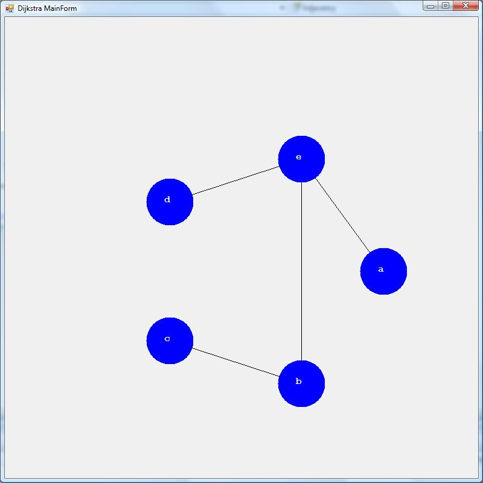

This application solves the shortest-paths problem for a connected and directed graph. The method used is called Dijkstra's algorithm.
This project should build using Visual Studio 2008 and perhaps later versions of Visual Studio.
Description
This version of Dijkstra's algorithm is from Introduction to Algorithms by Cormen, Leiserson, and Rivest and its discussion is found on pages 527-531. Like Prim's Minimum Spanning Tree algorithm this variant of Dijkstra's algorithm uses
a priority queue. The running time of the algortihm is calculated in the previously mentioned textbook and is found to be O(V^2). The shortest-paths problem became especially important with the advent of the Internet. Its solutions are utilized by routing
protocols.

using System; using System.Collections.Generic; namespace Dijkstra { class Algorithm { public List<int> Dijkstra(ref int[] pi, ref List<Node> G, int s) { InitializeSingleSource(ref pi, ref G, s); List<int> S = new List<int>(); PriorityQueue Q = new PriorityQueue(G); Q.buildHeap(); while (Q.size() != 0) { Node u = Q.extractMin(); S.Add(u.Id); for (int i = 0; i < u.Adjacency.Count; i++) { Node v = u.Adjacency[i]; int w = u.Weights[i]; Relax(ref pi, u, ref v, w); } } return S; } void InitializeSingleSource(ref int[] pi, ref List<Node> nodeList, int s) { pi = new int[nodeList.Count]; for (int i = 0; i < pi.Length; i++) pi[i] = -1; nodeList[s].Distance = 0; } void Relax(ref int[] pi, Node u, ref Node v, int w) { if (v.Distance > u.Distance + w) { v.Distance = u.Distance + w; pi[v.Id] = u.Id; } } } }
using System; using System.Collections.Generic; namespace Dijkstra { class Algorithm { public List<int> Dijkstra(ref int[] pi, ref List<Node> G, int s) { InitializeSingleSource(ref pi, ref G, s); List<int> S = new List<int>(); PriorityQueue Q = new PriorityQueue(G); Q.buildHeap(); while (Q.size() != 0) { Node u = Q.extractMin(); S.Add(u.Id); for (int i = 0; i < u.Adjacency.Count; i++) { Node v = u.Adjacency[i]; int w = u.Weights[i]; Relax(ref pi, u, ref v, w); } } return S; } void InitializeSingleSource(ref int[] pi, ref List<Node> nodeList, int s) { pi = new int[nodeList.Count]; for (int i = 0; i < pi.Length; i++) pi[i] = -1; nodeList[s].Distance = 0; } void Relax(ref int[] pi, Node u, ref Node v, int w) { if (v.Distance > u.Distance + w) { v.Distance = u.Distance + w; pi[v.Id] = u.Id; } } } }
For more information on Dijkstra's algorthm, see the textbook mentioned in the Description section or any decent algorithms or computer networking textbook. You can also search online.